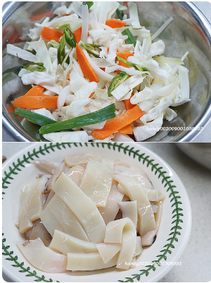
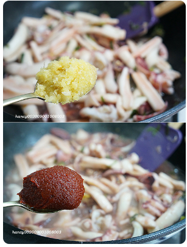
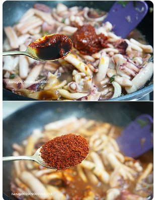
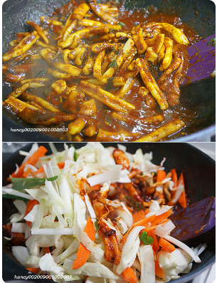
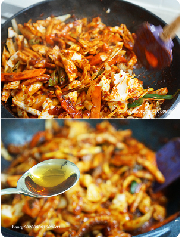
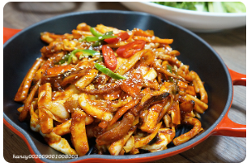

오징어 볶음
재료
- 오징어 2마리
- 양배추 1/4통
- 당근 1/2개
- 양파 1개
- 풋고추 2개
- 파 2뿌리
- 식용유 3큰술
조리순서
-
양배추, 당근, 양파, 파(준비량의 반)는 길쭉하고 굵게, 고추도 어슷큼직하게 썹니다. 오징어도
깨끗하게 손질해서 먹기좋은 크기로 썹니다.

-
팬에 식용유 3큰술과 송송썬 파를 넣은 후 불을 올려 볶아요. 파기름이 충분히 나오게, 노르스름해질때까지
볶습니다.

-
파가 노르스름하게 볶아지면 오징어를 넣고 볶다가 설탕 1큰술을 넣어 볶습니다.

-
마늘 1큰술 고추장 1큰술을 넣어고 볶습니다. 볶는 시간은 최소로 하세요, 마늘넣고 팬들어가며 섞어주는식으로 볶고,
고추장 넣고도 마찬가지로요.

-
간장 5큰술, 고춧가루 3큰술을 넣고 볶습니다. 너무 뻑뻑한 느낌이 들면 물 반컵을 넣고 볶습니다.

-
이제 준비한 채소를 볶던 팬에 전부 넣습니다.

-
잘 섞어가며 채소의 숨이 죽지않게 단시간으로 볶다가 불에서 내리기 직전 참기름을 촤악~ 둘러주고 끝!!

-
그릇이나 달군 팬에 먹음직스럽게 담고 통깨를 솔솔 뿌려 상에 냅니다. 완성!입니다. 맛있게 드세요~
